‹ Projects
Interlocking Buttons
Overview
The Interlocking Buttons are a mechanism I designed for an ongoing personal project for bike controls. The mechanism consists of two buttons: a small button and a large button. The two buttons are mechanically linked, so that depressing one button raises the other.
The buttons have two possible states, as shown in the following image.
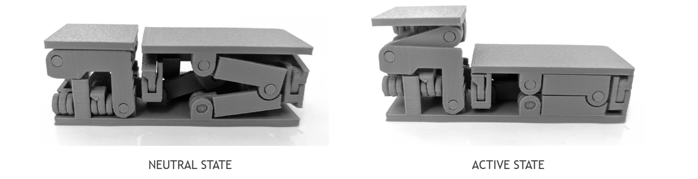
Interlocking Button States
Depressing the large button from the “neutral” state will raise the small button to an “active” state, while depressing the small button from the “active” state will return the mechanism to the “neutral” state.
I used Fusion360 to design the Interlocking Buttons and fabricated them on a Bambu A1 mini 3D printer. In total, the mechanism is assembled from 43 individual components, of which 15 are unique.
The following document contains a BOM of the assembly, followed by fully-dimensioned engineering drawings of all components in accordance with the ASME Y14 standard. The rest of this page provides a summary of the design process.
Design Specifications
To guide the design process, I used five design specifications as listed below.
- Function - the design should contain two mechanically linked buttons with two distinct states (as described previously). The surfaces of the buttons should remain flat and parallel with each other at all times.
- Comfort - the design should move smoothly and be pleasing to use.
- Size - the design should fit within a physical envelope of 40mm by 30mm by 80mm.
- Durability - the design should withstand repeated cycles of usage without any deterioration, and withstand abnormal loading conditions (including vertical, transverse, and bending forces).
- Manufacturability - the design should allow for quick assembly without needing specialized tools.
Concept generation
To satisfy the functional requirements, I would have to work out two mechanisms - how the buttons would move up and down (function 1), and how the buttons would be mechanically linked (function 2). Since the design of these two functions could more or less be independent (i.e. using a specific design for one function would not restrict the design of the second function), it made sense for me to focus on designing these two mechanisms individually.
I wanted to explore a diverse range of options, so I came up with five concepts for function 1 (vertical translation) and four concepts for function 2 (mechanical link). Tables 1 and 2 describe these mechanisms.
Table 1 - Concepts for Function 1 (Vertical Translation)
| 1A | Two-arm linkage | Linkages made of two arms (joined by hinges) connect the baseplate to the button. A total of four of these linkages are used to restrict the movement of the buttons to a single degree of freedom. |
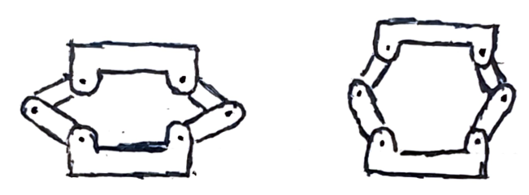 |
| 1B | Slot arm | Arms that are hinged to the baseplate are allowed to slide along a slot on the button as the button moves and down. Four of these arms are used to restrict movement to a single degree of freedom. |
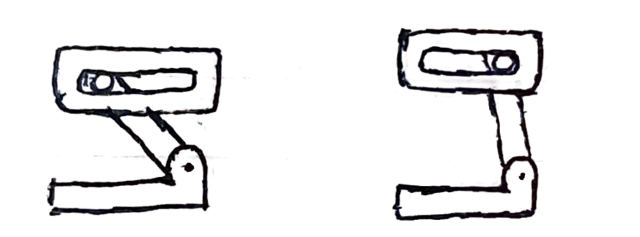 |
| 1C | Ball socket joint | Arms connect the baseplate to the button using ball socket joints. Because a single arm is used, the surface of the button must undergo rotation along the vertical axis as the button moves up and down. |
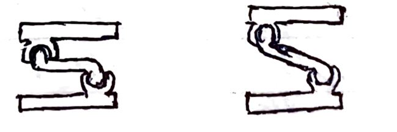 |
| 1D | Shaft | The button slides up and down a vertical shaft on the baseplate. |
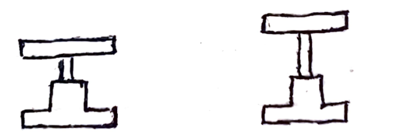 |
| 1E | Slot | Slot pins on the button slide up and down vertical slots on the baseplate. |
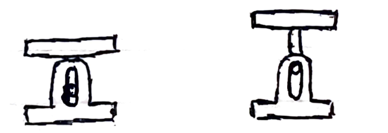 |
Table 2 - Concepts for Function 2 (Mechanical Link)
| 2A | Lever | A lever raises one button when the other is pressed down, like a seesaw. |
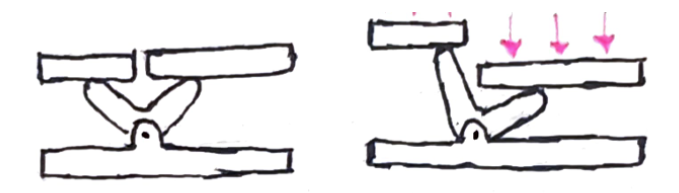 |
| 2B | Linked Lever | Similar to (1), but with both ends of the lever directly connected to the buttons through a linked arm. As a result, the friction resulting from the contact point between the lever and the buttons in (1) is replaced by rotational movement of the hinges in the linked arm. |
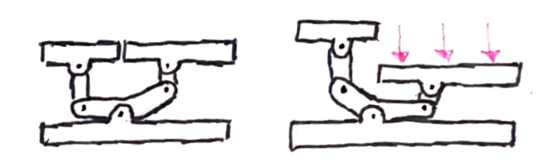 |
| 2C | Slotted L-bar | An L-shaped arm is connected to both buttons with hinges on either side. In the middle, a slot pin slides along a slot on the baseplate |
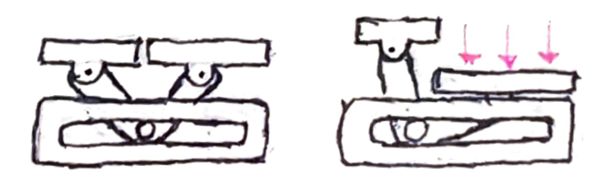 |
| 2D | Rack and Pinion | A rack and pinion system connects both buttons. Toothed bars are connected to each button, which are mated to both sides of a gear. Moving one button up and down causes the gear to rotate, which in turn moves the other button. |
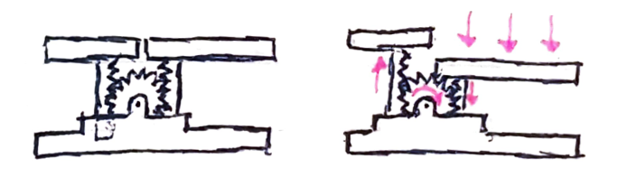 |
Concept Selection and Prototyping
To identify the best option among the potential concepts, my approach was to design a simple component to encapsulate the basic functionality of each option. My objective was to create a physical representation of each concept to evaluate their behaviour when brought into the physical world. The following figure shows three prototypes for Function 1 (vertical translation).
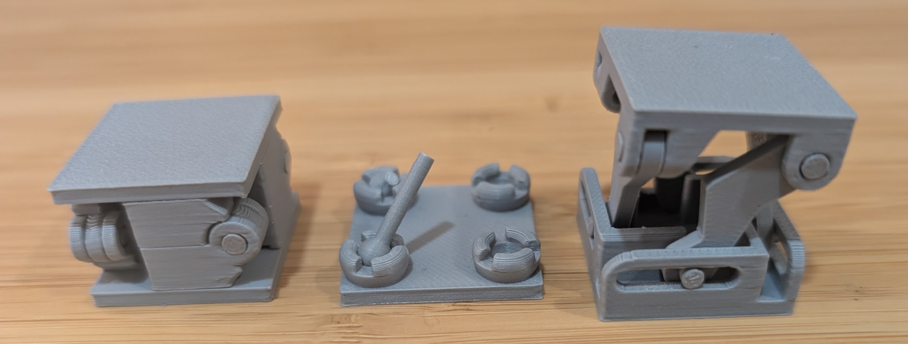
Prototypes for concepts 1A, 1C, and 1B (left to right)
By creating a quick physical prototype of each concept, I could get a better sense of how well each mechanism would satisfy the design requirements. By evaluating their physical prototypes, I eliminated some concepts due to comfort (the frictional interactions in concepts 1D, 2A, and 2C made the sliding mechanism abrasive and unpleasant to use), size (the complexity of concept 2D made it difficult to fit within the required physical envolope), and durability (concept 1C had structural weaknesses that would cause the mechanism to break under abnormal loading conditions).
Some concepts showed promise, and I iterated over these designs to improve the strength, manufacturability, and comfort. For example, the following figures show how adding a curvature to the slot in concept 1B results in a larger range of motion and a smoother sliding motion (due to the forces of the slot pin being always approximately aligned with the direction of the slot).
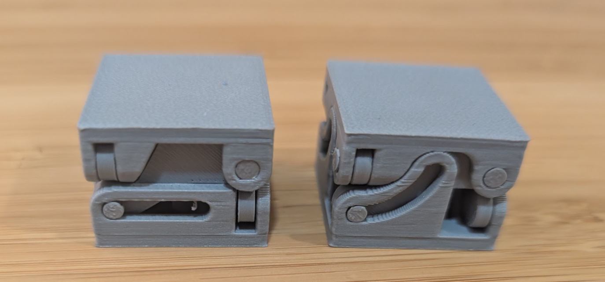
Iterating concept 1B; original design (left) and iterated design (right)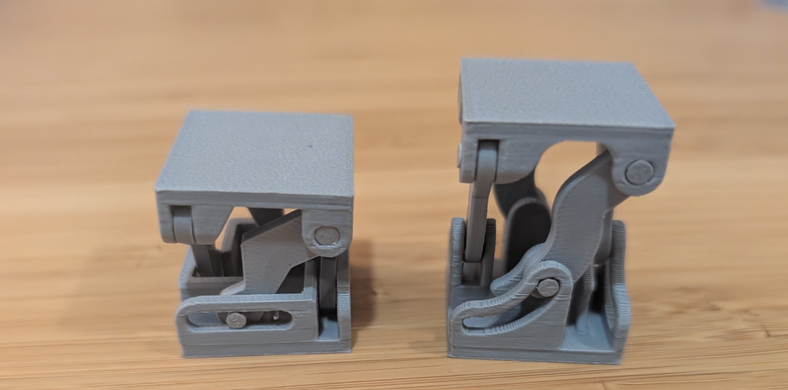
Extended buttons from the previous figure; original design (left) and iterated design (right)
In the end, I chose to combine concepts 1A and 2B for the final mechanism due to superior durability and smoothness of movement. The following figure shows a BOM of the assembly. Clicking the figure will open engineering drawings for all components.
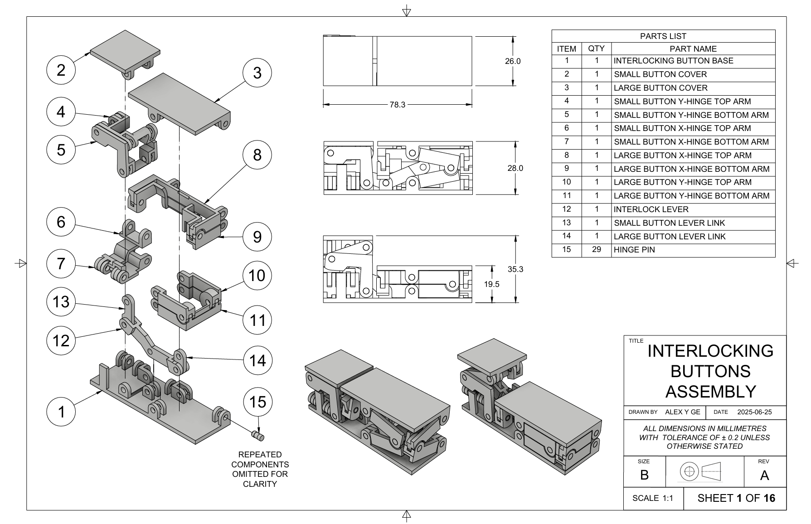
BOM of the assembly. Click the image to view engineering drawings